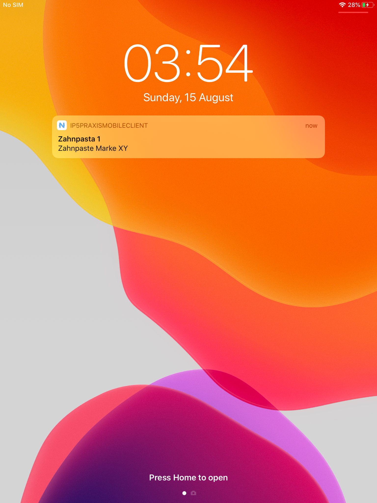
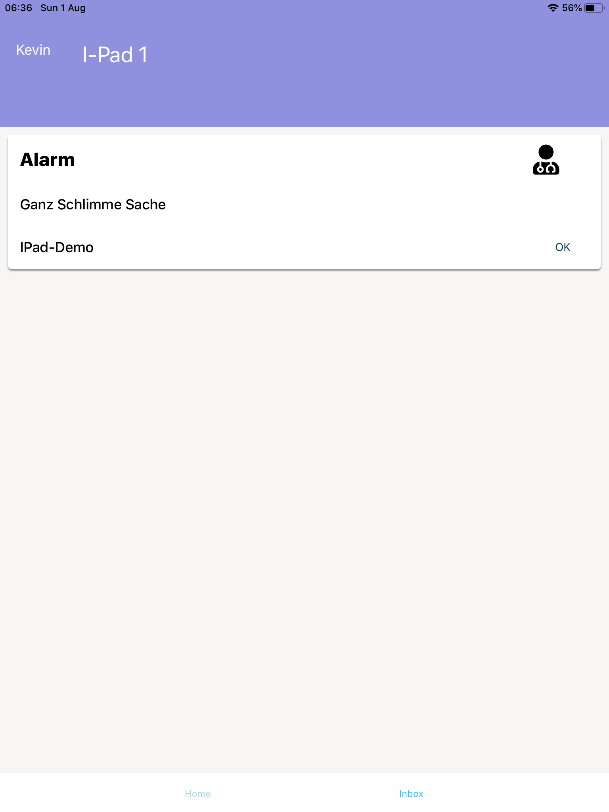

Entwicklung eines konfigurierbaren Rufsystems für Arztpraxen
Ziel dieser Arbeit ist es, ein Konzept für ein Cloudbasiertes Praxisrufsystem zu entwickeln und dieses umzusetzen. Das Rufsystem muss auf Cloud Technologien basieren und über Mobile Tablet Geräte verwendet und bedient werden können.
Ärzte und Zahnärzte benutzen in ihren Praxen oft ein Rufsystem. Dieses ermöglicht es Hilfe anzufordern oder Material zu bestellen. Heute kommerziell erhältliche Produkte basieren auf veralteten Technologien und können nicht oder nur schlecht in eine moderne Cloud Infrastruktur eingebaut werden.
Mit dieser Arbeit wurde ein Cloudbasierte Praxisrufsystem konzipiert und umgesetzt. Das Umgesetzte System bietet die Möglichkeit frei konfigurierbare Benachrichtigungen zwischen Endgeräten zu versenden. Das Praxisrufsystem besteht dabei aus einem Mobile Client zum Versenden und Empfangen von Benachrichtigungen, einer Web-Oberfläche zum Verwalten der Konfiguration des Systems und einen Cloud Service der die Konfiguration speichert und die Vermittlung von Benachrichtigungen an Ihre Empfänger übernimmt. Zur Übermittlung von Benachrichtigungen wurde Firebase Messaging in das System integriert. Mit Amazon Webservices wurde eine Cloud Infrastruktur aufgebaut, die es erlaubt das Praxisrufsystem zu betreiben.
 Projektdauer: 15.02.2021 bis 20.08.2021 Aufwand in Personenstunden: 360 Stunden Teamgrösse: 2 Personen
Prof. Daniel Jossen FHNW Hochschule für Technik Bahnhofstrasse 6 5210 Windisch
Joshua Villing Kevin Zellweger
Prof. Daniel Jossen: daniel.jossen@fhnw.ch